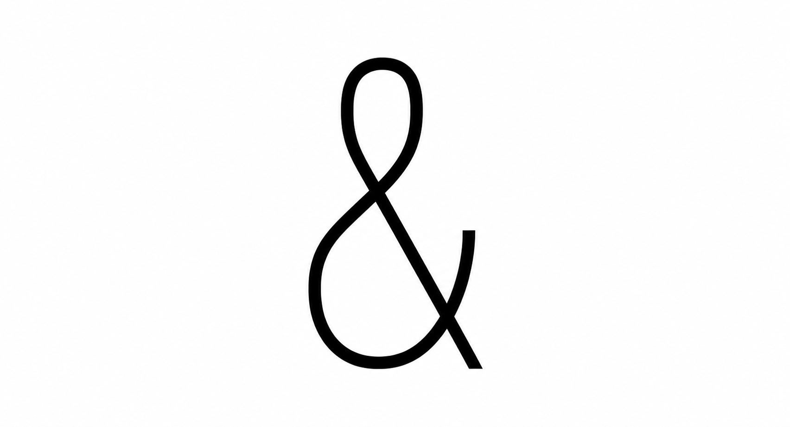
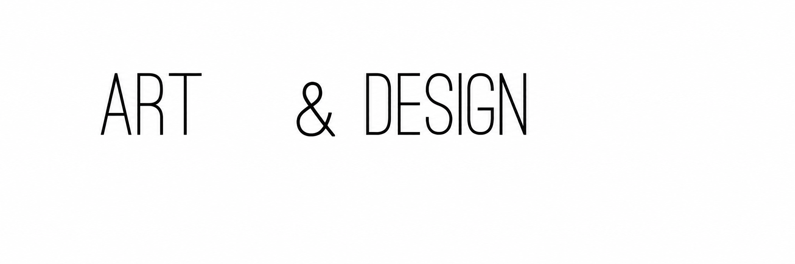
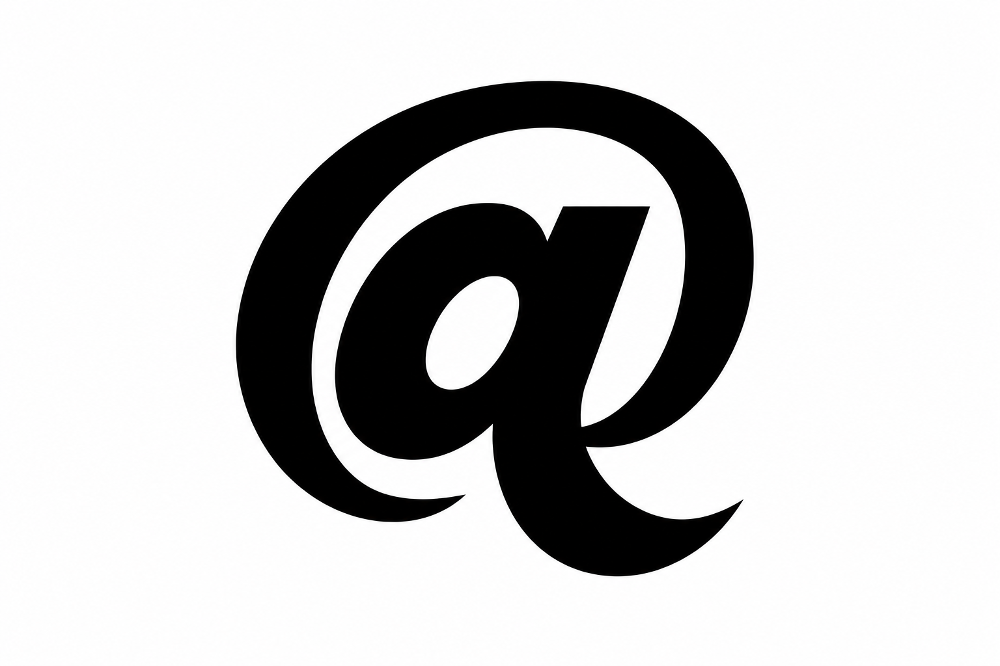
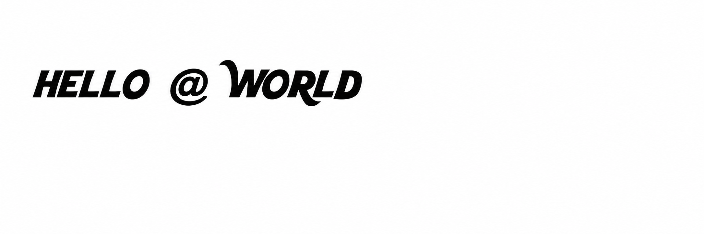
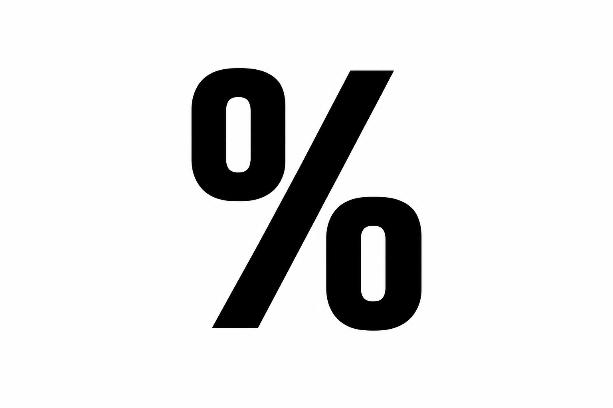
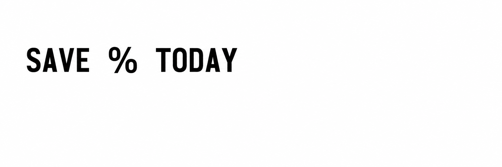
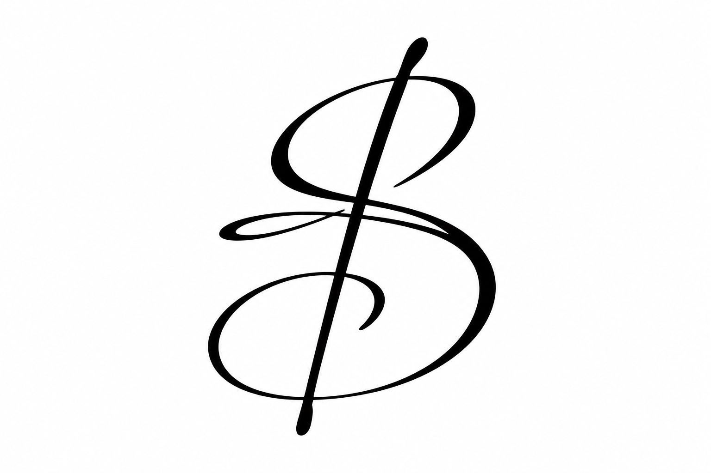
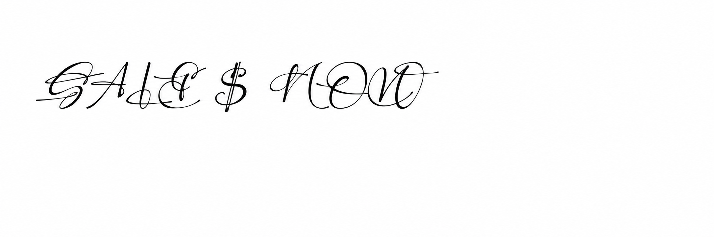

Font Filler: first comparisons
Four font and symbol pairs, with one generated candidate per approach. The reference character is the original glyph, held out of the generation input. Click a generated image to inspect it at full size.
Approach 1 uses an alphabet specimen to generate a single character. Approach 2 replaces a contrasting placeholder in a short phrase. Results are raw images; they have not been traced into a font. The original Ostrich pilot used a short placeholder; later prompts explicitly ask the model to choose proportions that suit the letters.
| Font lettering | Approach 1 · isolated | Approach 2 · in context | Original character |
|---|---|---|---|
| Ostrich SansThin, condensed · ampersand ART DESIGN ABCDEFG 012345 |  |  | & Original font glyph |
| Kool BeansBold, decorative · at sign HELLO WORLD ABCDEFG 012345 |  |  | @ Original font glyph |
| MonofontoBold, monospaced · percent SAVE TODAY ABCDEFG 012345 |  |  | % Original font glyph |
| Perfect SignatureExpressive script · dollar SALE NOW ABCDEFG 012345 |  |  | $ Original font glyph |


Traced characters in real text
Each trial font replaces the indicated character in a copy of the source font. Click a text sample to edit it. Original and trial samples are independent; type the same text into both to compare. The generated glyph is traced from the isolated image, with no manual outline cleanup.
The first font renders at the original punctuation height. Kool Beans and Perfect Signature use capital-letter height because their original punctuation is unusually small. Monofonto keeps its fixed character width: the percent sign is narrowed to fit while retaining its intended height. Kool Beans has extra space around its at sign. Spacing and shape are experimental.
| Original font | Traced font copy |
|---|---|
| Ostrich Sans · original & ART & DESIGN | Generated & · download TTF ART & DESIGN |
| Kool Beans · original @ HELLO @ WORLD | Generated @ · download TTF HELLO @ WORLD |
| Monofonto · original % SAVE 25% TODAY | Generated % · download TTF SAVE 25% TODAY |
| Perfect Signature · original $ SALE $ NOW | Generated $ · download TTF SALE $ NOW |